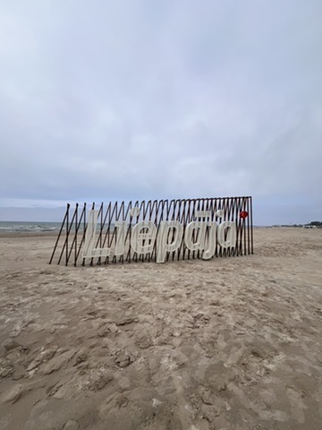
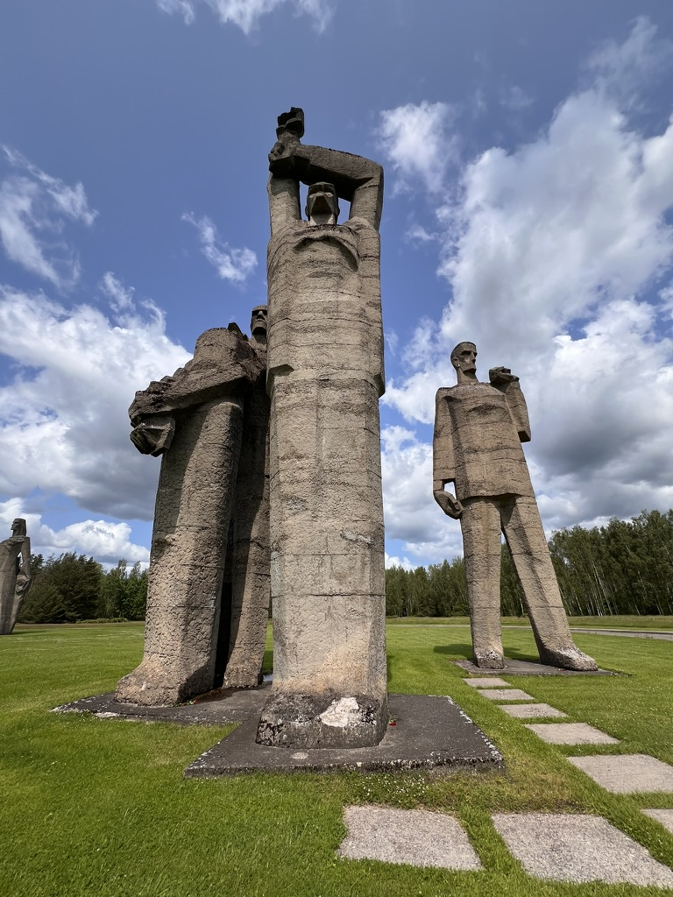
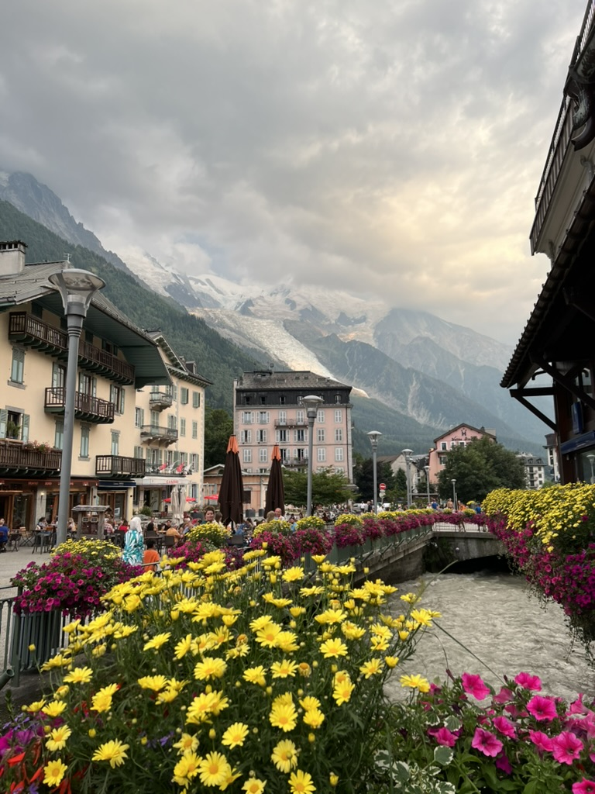
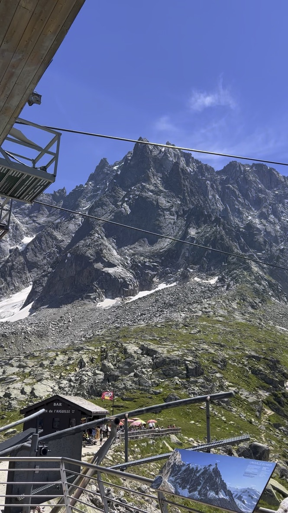
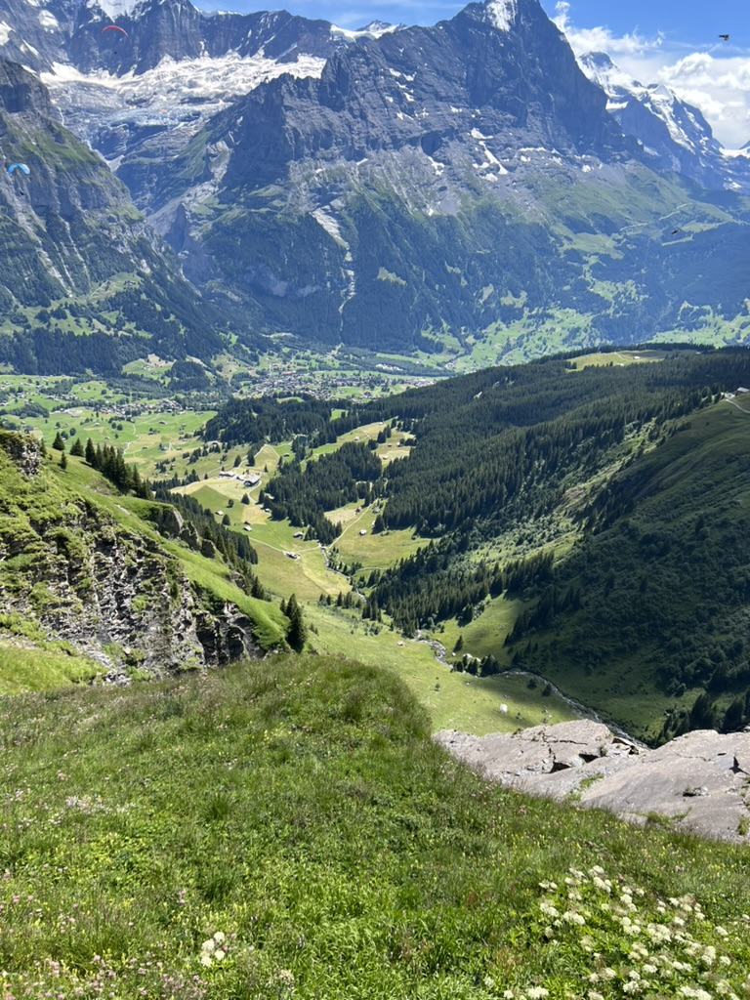
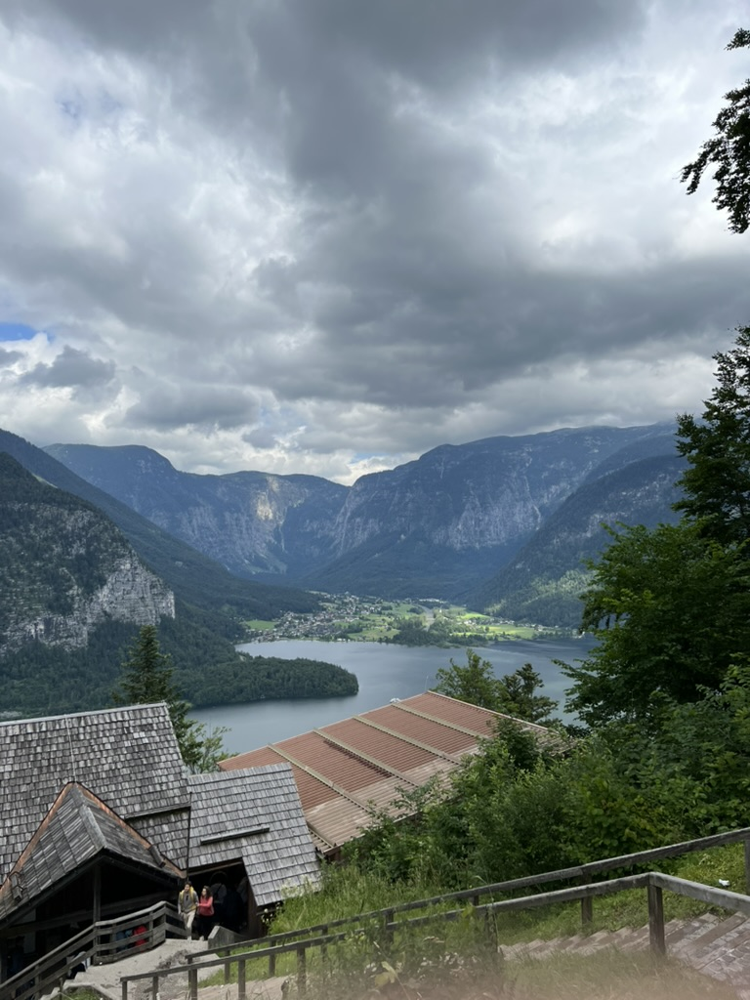
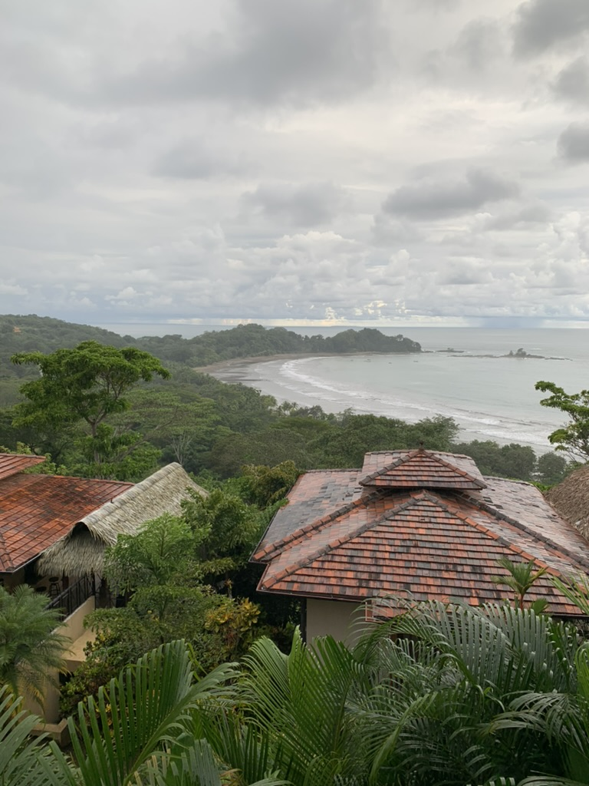
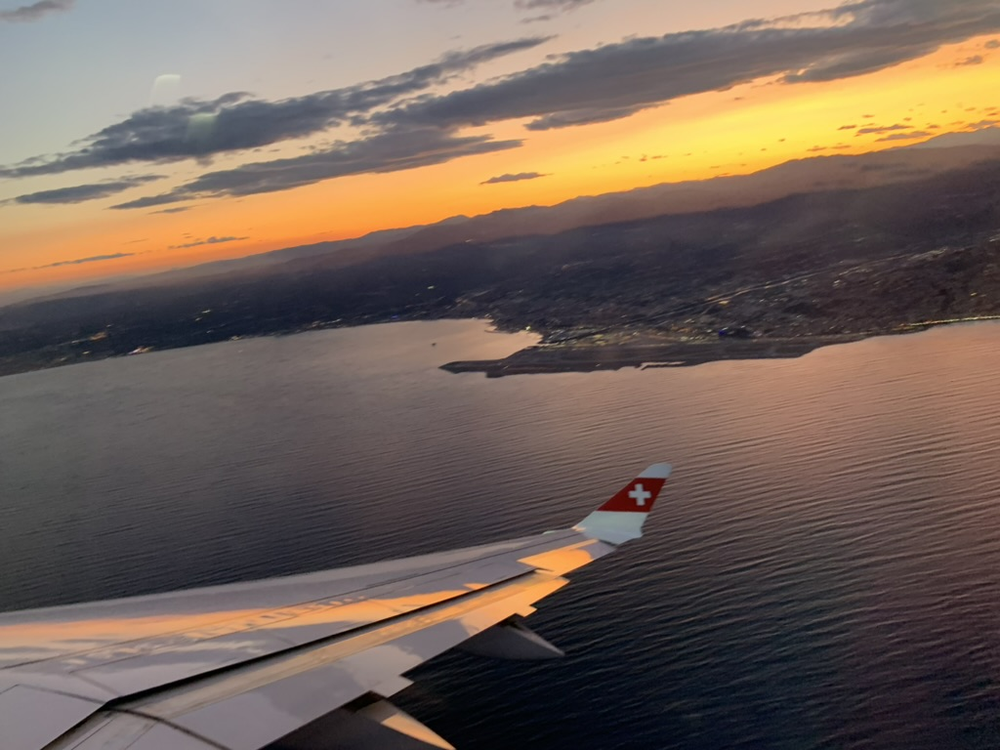
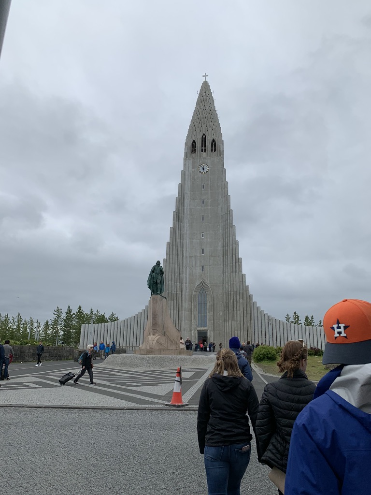
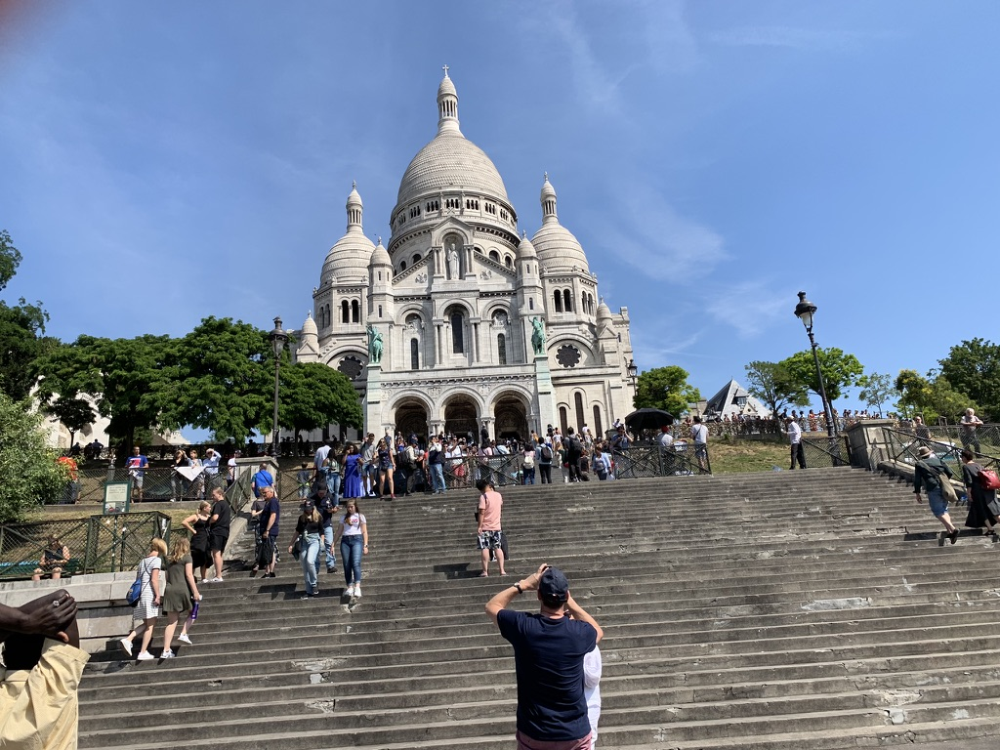

The World in Data
International tourism trends — because the data tells the story too.

"Travel is fatal to prejudice, bigotry, and narrow-mindedness." — Mark Twain
Explore the IdeaI grew up in Montana — big sky, open land, and not a lot of diversity in the people around me. For a long time, my understanding of the world came from what I could see from my own backyard. Then I started traveling. First across the United States, then across oceans. And something quietly shifted.
When you stand in the ruins of a Soviet war memorial in Latvia, or share a meal with a family in Costa Rica using broken Spanish and a lot of laughter, or watch the sun set from a Swiss Air flight over the Mediterranean — you stop seeing the world as "us" and "them." You start seeing people. Real ones. With stories just as complicated and beautiful as yours.
That's what travel does. It doesn't just fill a passport — it fills in the gaps in your empathy. And in a world that desperately needs more of it, I believe getting out there — whether it's a neighboring state or a neighboring continent — is one of the most meaningful things a person can do.
Being fluent in Spanish has deepened this further. Language is more than communication — it's a doorway into how a people think, joke, grieve, and celebrate. Speaking with someone in their own language is one of the most direct acts of respect you can offer. It says: your world is worth understanding.
Travel isn't just a hobby — it's a curriculum. Here are the core lessons it teaches:
A few frames from the road — Europe, Central America, and everywhere in between.










This short video shows why travelling is an important life experience
Being fluent in Spanish isn't just a resume line — it's one of the most humanizing skills I've developed. From Costa Rica to Spain to Spanish-speaking communities right here in the U.S., speaking someone's language is the fastest shortcut to genuine connection. It signals: I see you, I respect you, I want to understand your world. That alone is an act of empathy.
International tourism trends — because the data tells the story too.
Want to find your own Tableau visualization? Browse thousands at public.tableau.com.